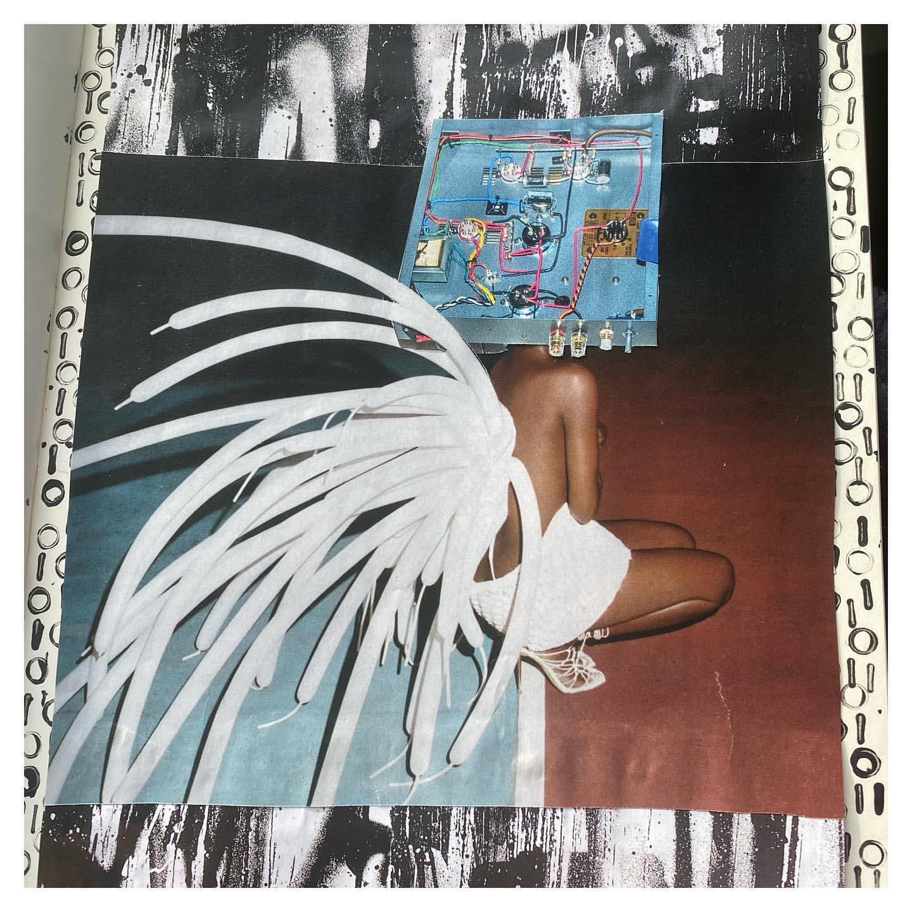
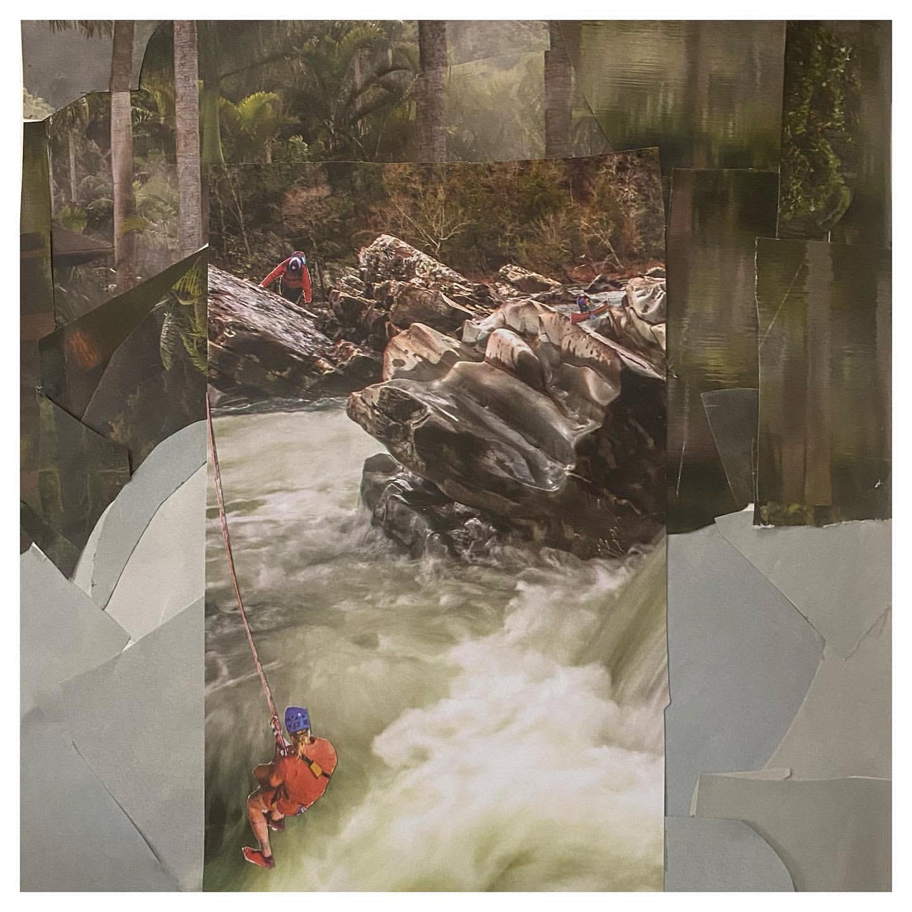
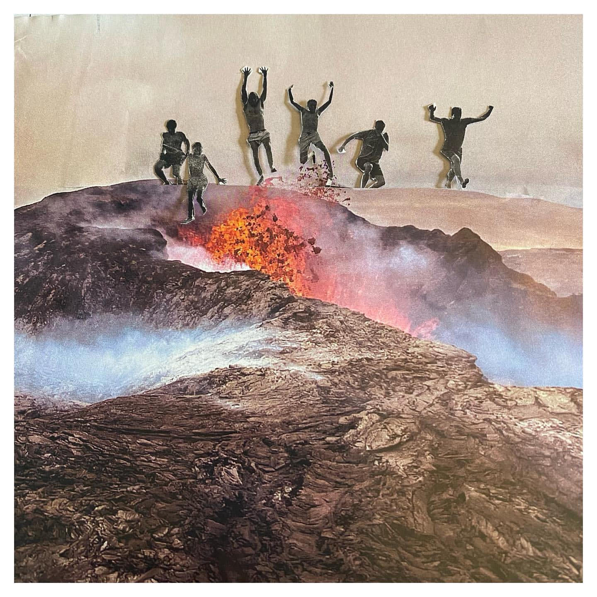

This piece was created during Assignment #3 Mars Rover. Anytime I would text 'Mars Rover' on my phone it would auto-correct to 'Mars River' That typo inspired me to create this piece. The POV is from a tent, looking out at kayakers in the Mars River. I used images of kayakers from a Visit Alabama pamphlet.
"Mars River" collage art by Tayler Edelen
Creative Distraction
When I first started the LaunchCode course, I couldn't fall asleep without seeing numbers and symbols. I was coding myself to sleep every night. In an effort to channel these distracting thoughts I created this piece. I felt like I was becoming part computer, so I made the persons head a piece of equiptment. I added binary code behind the collage by using an I and O stamp from a letter set.

"Creative Distraction" collage art by Tayler Edelen
Risky Behavior
I ordered several state brocuhres for free collage content. I used images of a rock climber and kayaker in a nature scene with rushing waters. I layered similarly colored scraps of paper around the image. This piece was time consuming, but worth it. The result is a textural scene that added depth. The image blends into the layered scraps seamlessly.

"Risky Behavior" collage art by Tayler Edelen
Might As Well Jump
I enjoy collage art because it gives me the ability to create the absurd. I used an image of people jumping from a dock, and placed them above the erupting volcano. This was challenging because the people are so tiny, and I didn't want to lose any details of their silhouettes. When I looked at the final piece the Van Halen classic rang in my mind. Might as well jump!

"Might As Well Jump" collage art by Tayler Edelen